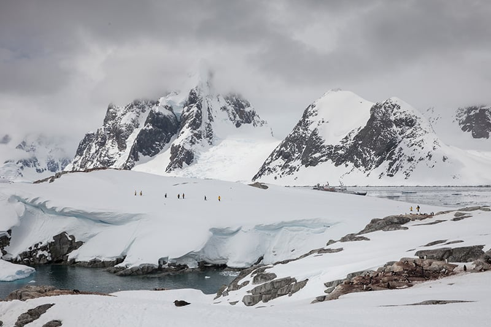

mukesh | 3min read | 12-03-2024

A polar desert is defined as a region with a mean temperature of less than 10 degrees Celsius during the warmest month and annual precipitation, including rainfall or snow, of no more than 250 millimeters.
Arctic polar deserts
Consisting primarily of gravel plains and bedrock, regions like these were more common during ice ages, due in large part to the freezing temperatures that encompassed most areas of Earth, as well as a lack of precipitation.
Adventures in polar deserts
While not always the case, polar deserts are typically found at higher latitudes. For a better understanding of the weather associated with these regions, let’s examine the Antarctic polar desert for example.
In this area, the coldest winter months usually have a mean temperature of -29 to -30 degrees Celsius making it the coldest desert in the world.
Visiting and Exploring Polar Deserts
the Arctic and Antarctica are home to the world’s only polar deserts. Anybody who visits either region is in for the trip of a lifetime, as a polar desert provides a unique experience.
intresting fact
every polar desert region goes through a period of time, lasting nine to ten months, in which there is no sunlight that's called the Polar Night
In conclusion,it is important to be prepared for any and all weather conditions. For example, the weather in the coastal regions of Antarctica can quickly change. Dressing in layers will prepare you for just about anything that comes your way